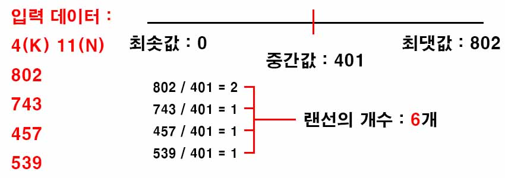
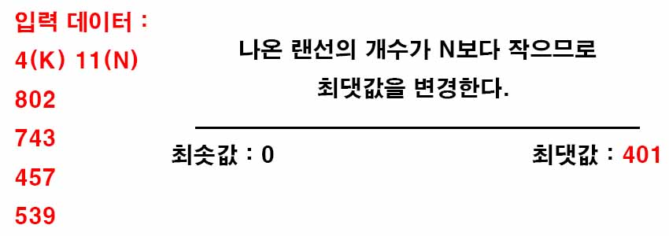

백준 1654. 랜선 자르기
- https://www.acmicpc.net/problem/1654
-
문제 :
집에서 시간을 보내던 오영식은 박성원의 부름을 받고 급히 달려왔다. 박성원이 캠프 때 쓸 N개의 랜선을 만들어야 하는데 너무 바빠서 영식이에게 도움을 청했다.
이미 오영식은 자체적으로 K개의 랜선을 가지고 있다. 그러나 K개의 랜선은 길이가 제각각이다. 박성원은 랜선을 모두 N개의 같은 길이의 랜선으로 만들고 싶었기 때문에 K개의 랜선을 잘라서 만들어야 한다. 예를 들어 300cm 짜리 랜선에서 140cm 짜리 랜선을 두 개 잘라내면 20cm는 버려야 한다. (이미 자른 랜선은 붙일 수 없다.)
편의를 위해 랜선을 자르거나 만들 때 손실되는 길이는 없다고 가정하며, 기존의 K개의 랜선으로 N개의 랜선을 만들 수 없는 경우는 없다고 가정하자. 그리고 자를 때는 항상 센티미터 단위로 정수길이만큼 자른다고 가정하자. N개보다 많이 만드는 것도 N개를 만드는 것에 포함된다. 이때 만들 수 있는 최대 랜선의 길이를 구하는 프로그램을 작성하시오. -
입력 :
첫째 줄에는 오영식이 이미 가지고 있는 랜선의 개수 K, 그리고 필요한 랜선의 개수 N이 입력된다. K는 1이상 10,000이하의 정수이고, N은 1이상 1,000,000이하의 정수이다. 그리고 항상 K ≦ N 이다. 그 후 K줄에 걸쳐 이미 가지고 있는 각 랜선의 길이가 센티미터 단위의 정수로 입력된다. 랜선의 길이는 231-1보다 작거나 같은 자연수이다. -
출력 :
첫째 줄에 N개를 만들 수 있는 랜선의 최대 길이를 센티미터 단위의 정수로 출력한다. -
풀이 :
랜선의 최솟값과 최댓값을 설정하고 그 사이의 임의의 값을 설정하고 비교하면서 범위를 좁혀간다.
최솟값을 0으로 최댓값은 입력받은 데이터 중 가장 큰 값으로 설정한다.

최솟값과 최댓값의 중간값을 이용해 만들 있는 랜선의 개수를 구한다.

랜선의 개수가 N보다 많을 경우 최솟값을 중간값으로 변경, 랜선의 개수가 N보다 적을 경우 최댓값을 중간값으로 변경한다.
이러한 과정을 반복해서 최솟값과 최댓값의 차이가 1이 되면 둘 중에 정답이 있으므로 확인하는 작업을 해야한다.
최댓값으로 랜선을 잘랐을 때 랜선의 개수가 N개가 나오면 최댓값을 출력하고 랜선의 개수가 N개보다 적으면 최솟값을 출력한다.